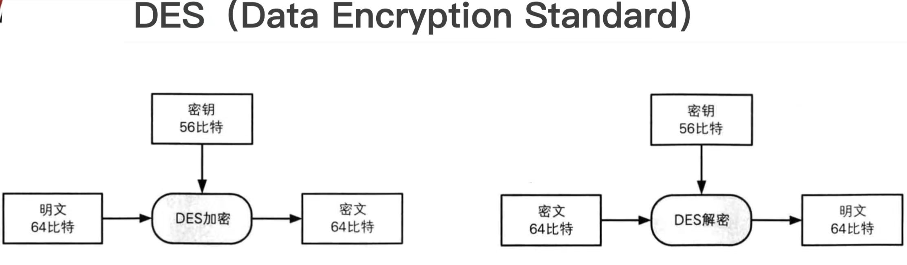

核心原理：Feistel结构与密钥扩展
DES是一种对称分组加密算法，将64位明文分组加密为64位密文，使用56位密钥（实际输入64位，含8位校验位）。其核心机制包括：
1.初始置换（IP）：
重新排列明文比特顺序，增强扩散性。
2.16轮Feistel结构：
- 分组：将数据分为左右两半（L0, R0）。
- 轮函数（F函数）：
- 扩展置换（E - box）：将32位R扩展为48位。
- 密钥混合：与48位轮密钥按位异或。
- S - 盒替代：通过8个S - 盒将48位压缩为32位。
- P置换：打乱S - 盒输出顺序。
- 迭代：L(i + 1) = R(i)，R(i + 1) = L(i) ⊕ F(R(i), K(i))。
3.最终置换（IP⁻¹）：
逆初始置换，输出密文。
密钥扩展：
从56位主密钥生成16个48位轮密钥，通过循环移位与压缩置换实现。
加解密过程：
- 加密：
- 解密：
明文 → 初始置换 → 16轮Feistel加密 → 最终置换 → 密文。
密文 → 初始置换 → 16轮Feistel解密（轮密钥顺序相反） → 最终置换 → 明文。

DES优点与缺点
优势：
- 高效性：硬件实现快速，适合实时加密。
- 标准化：全球通用，兼容性强。
- 对称性：加密与解密使用相同算法，简化系统设计。
局限：
- 密钥长度过短：56位密钥易受暴力破解，现代计算机可在数小时内破解。
- 分组长度限制：64位分组难以适应大数据加密需求。
文化与历史影响
1.密码学复兴：
DES的公开标准激发了全球密码学研究，推动了非对称加密（如RSA）的诞生。
2.商业应用：
广泛应用于金融交易（如POS机）、电子邮件（如PGP早期版本）、VPN等。
3.硬件加速：
DES芯片成为早期加密硬件的代表，如ATM机中的加密模块。